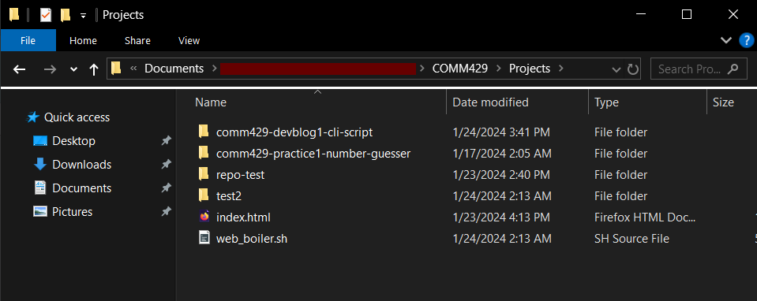

Web development often requires the same file structure as a starting
point, regardless of the final result. The file structure is able to
change overtime, but once a user developes a standard file structure of
their choosing, all projects start the same. This project develops the
following file stucture for starting a web development project:
An additional .git folder can be created if the proper
remote repository parameter is included in the command.
After the project is created, the project itself will open up in
Visual Studio Code and open up the resulting index.html
file in the default browser.
Prerequisites
This program assumes that you are using either a Windows or Linux
operating system. You will need the following programs installed per
system to allow the script to function:
Windows
Windows Subsystem for Linux (WSL)
Visual Studio Code
A Web Browser (Firefox, Chrome, etc.)
A folder where you want all of your web projects to be located
Linux
Visual Studio Code
A folder where you want all of your web projects to be located
If you wish to utilize the git functionality of creating a project
connected to a remote repository, ensure that you have git installed and
configured. The
installation guide can be found here.
To configure git, run the following commands using your name and
respective email:
NOTE: For Visual Studio Code (VSCode), ensure that
the path variable “code” is properly added, especially for Windows.
Refer to the
VSCode Installation Documentation for your operating system to
ensure VSCode is fully installed.
Installation
Follow the proceeding steps to install the script. These steps work
for both the Windows and Linux operating systems.
Download the shell file web_boilder.sh and locate it on
your system.
Place the shell script in the projects folder as specified in the
Prerequisites section
An example is shown below, where all projects are placed in the
directory Projects. A couple example projects are in this
directory.

An example directory showing the
“Projects” folder with the “web_boiler.sh” script and various projects
inside the directory.
Running the Script
As this script can be ran on both Windows and Linux, the following
steps will specify how to run the program on both operating systems.
Whenever a project is created, given the respective project name, it
creates the structure that is show at the top of the document. The
remote git repository option will create the additional
.git directory and options
Windows
To run the program on Windows:
Open either the Command Window or Powershell, and navigate to the
projects directory
Enter the command of your choosing:
To get help on the function, use the command:
bash web_boiler.sh -h
This funciton will display general information on how to utilize the
function. This document serves as additional documentation to this
function.
To create a new project with a no-space name
projectName, without creating a remote GitHub repository,
run the following command:
bash web_boiler.sh projectName
Example:
bash web_boiler.sh practice-website
Additionally, to create a new project with a name
projectName linking to a valid remote repository
remoteGitRepo, the following command can be used:
bash web_boiler.sh projectName remoteGitRepo
You can then push the repository to GitHub with the following
command. This command must be done seperately due to proxy issues. This
command must be executed in the terminal, whilst in your new project’s
directory, which can be done in VSCode’s terminal once the new project
loads.
Upon creating a project, when VSCode opens, it will open in the
WSL environment. You can either edit the project in the WSL environment,
or click on the blue button in the bottom-right to open the project in
your local installation of VSCode.
How to redirect from WSL’s VSCode to
the local, Windows VSCode.
Linux
To run the program on Linux:
Open the terminal, and navigate to the projects directory
Enter the command of your choosing
To get help on the function, use the command:
shell web_boiler.sh -h
This funciton will display general information on how to utilize the
function. This document serves as additional documentation to this
function.
To create a new project with a no-space name
projectName, without creating a remote GitHub repository,
run the following command:
shell web_boiler.sh projectName
Example:
shell web_boiler.sh practice-website
Additionally, to create a new project with a name
projectName linking to a valid remote repository
remoteGitRepo, the following command can be used:
shell web_boiler.sh projectName remoteGitRepo
You can then push the repository to GitHub with the following
command. This command must be done seperately due to proxy issues. This
command must be executed in the terminal, whilst in your new project’s
directory, which can be done in VSCode’s terminal once the new project
loads.
Regardless of the method on how you create your project, upon
successful creation of a new web development project, the following page
will be created and opened in your default browser.
The index.html page in a browser,
opened by the script.
You will also have the following VSCode window open, showing the
entire project and it’s structure.
VSCode open, showing the project
structure.
You can now start working on your project by editing the files within
this directory. This can include adding content in the webpage, adding
images, styles, and more! As shown in the above output, there is even a
spot for your name on Line 6! You can see your results in the browser by
refreshing the page that was opened, the index.html
file.